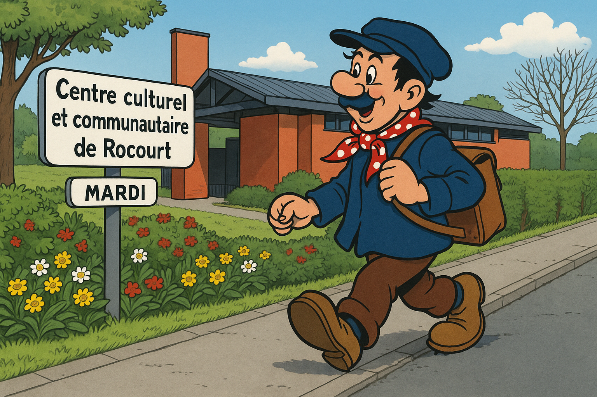

Nous contacter
Djåzans nosse linguèdje !
Poqwè n'nin s'ritrover l' mårdi di 16h45 à 18h15 å « Centre culturel communautaire de Rocourt »
po djåzer, lére dés scriyèdjes, aprinde dès spots… è walon. V'-èstez turtos lès bins m'nous.
Envie de parler wallon ? Pourquoi ne pas se retrouver les mardis de 16h45 à 18h15 au Centre Culturel Communautaire de Rocourt pour discuter, lire, apprendre ? Vous êtes tous les bienvenus.

Infos pratiques
📅 Quand
Tous les mardis, de 16h45 à 18h15
📍 Où
Centre Culturel Communautaire de Rocourt
Rue de l'Arbre Courte Joie 40
4000 Rocourt
👤 Contact
Charles Dejong
📧 E-mail
info@wallonrocourt.be
📞 Téléphone
04/263.08.07
Vous êtes tous les bienvenus — débutants, curieux, nostalgiques.
Envoyer un message
Pour nous contacter, envoyez-nous un e-mail à l'adresse ci-dessous. Nous vous répondrons dans les plus brefs délais.
✉️ Écrire un e-mailVotre application e-mail s'ouvrira automatiquement avec notre adresse pré-remplie.